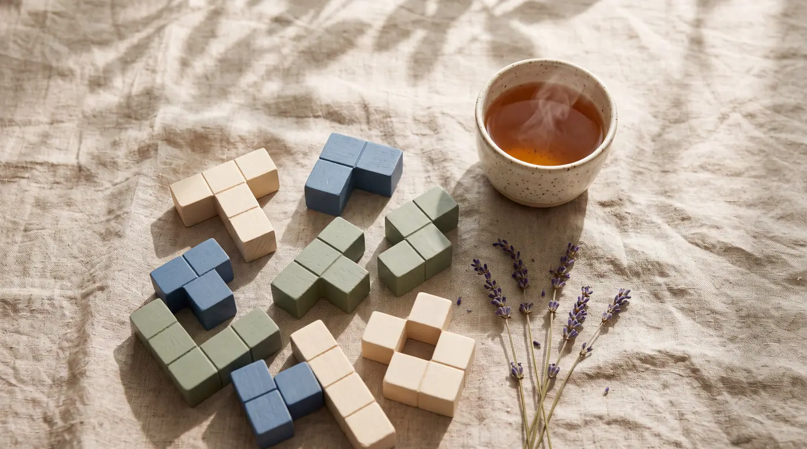
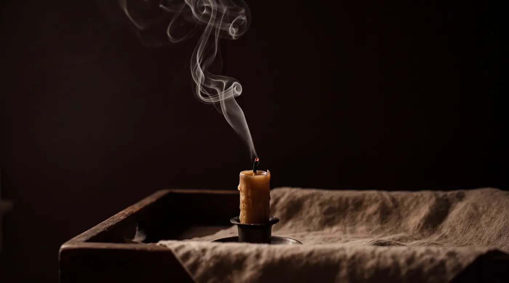

Ciche gry
na ciepłe wieczory
Tworzymy przytulne, mądre gry — takie, w które gra się powoli, z kubkiem herbaty, przy świecy.
Poznaj Koselig
Parzone powoli
Coffee Beans Studio to małe niezależne studio. Zależy nam na spokojnych łamigłówkach, ciepłych materiałach i uczciwym projektowaniu: na tym, czego chce się dotknąć wzrokiem — drewno, len, światło świecy — i na zasadach, które da się zrozumieć w minutę.
Koselig
Drewniana łamigłówka z tacką
Ułóż wszystkie klocki w drewnianej tacce. Stół, tackę i klocki dobierz do nastroju: dąb albo len, orzech albo mosiądz, farba albo kamień. A gdy utkniesz, małe bonsai podpowie, czy da się to jeszcze ułożyć.
- Trzy stoły
- Tacki i klocki
- Mapa poziomów
- Bonsai
Wkrótce w App Store i Google Play
O grze


koselig
norw. — przytulny, ciepły, swojski. Uczucie świecy, koca i dobrego towarzystwa.

Prawie zapakowane
Koselig szykuje się do premiery w App Store i Google Play. W dniu premiery pojawią się tu linki.

Napisz do nas
Pytanie, pomysł albo błąd w łamigłówce? Czytamy każdą wiadomość.
support@coffeebeansstudio.eu